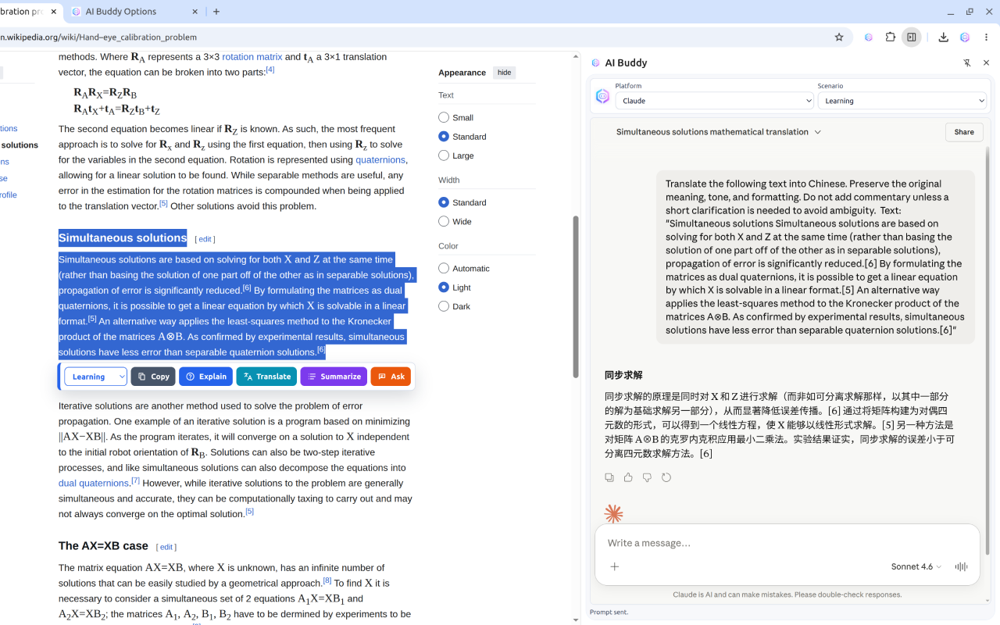
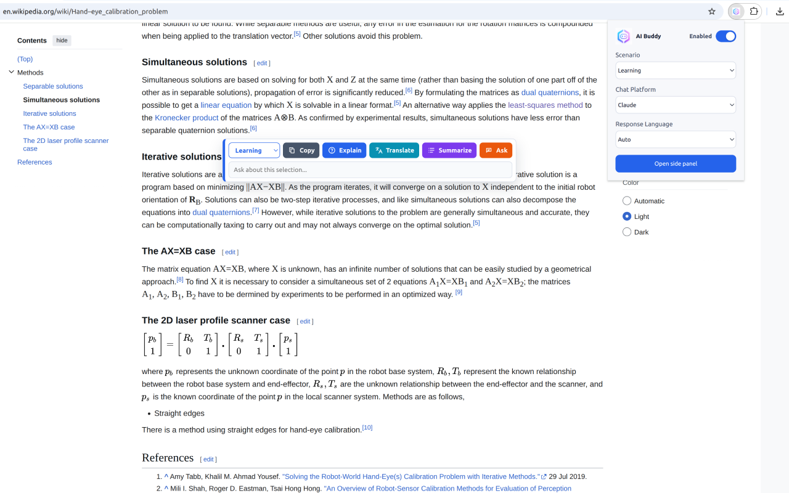
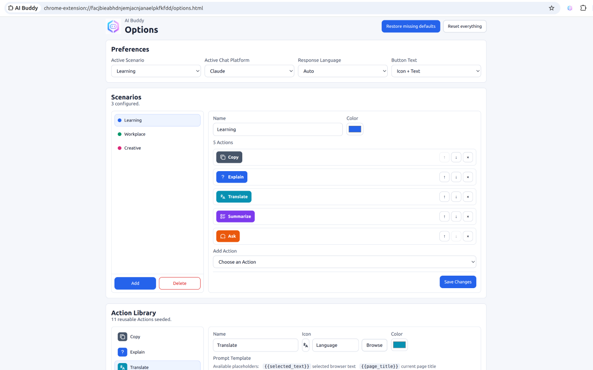

Learning
Understand any selected passage
Hand-eye calibration estimates the rigid transformation between a robot end-effector and an attached camera.
Free Chrome screenshot and sidebar assistant
Capture part of a webpage or highlight text, choose a reusable action, and send a polished prompt to your preferred chat platform with shortcuts, safety checks, and per-platform Send Behavior.
Learning
Hand-eye calibration estimates the rigid transformation between a robot end-effector and an attached camera.
Email reply
Can you send the updated contract by Friday and confirm whether procurement approved it?
Creating visuals
A lightweight launch dashboard showing adoption, retention, customer feedback, and next bets.
Supported platforms
AI Buddy supports ChatGPT, Claude, Gemini, DeepSeek, and Microsoft Copilot for AI chat. Messaging destinations such as WhatsApp Web, Telegram Web, and Discord default to Draft only, and can be switched to Auto-send from Send Behavior in the side panel or Options page.
Use the web content already in front of you.
Run reusable prompts from a compact toolbar.
Open the target platform beside the current page.
New in v1.2.2
AI Buddy now keeps sending mode visible in the side panel, simplifies messaging auto-send, and keeps the same lightweight toolbar model for repeated browser workflows.
Start from Learning, Workplace, Creative, Research, Writing, Coding, Marketing & Sales, Customer Support, Data Analysis, or Planning.
Use shortcuts for toolbar enablement, side panel, screenshots, and the next Scenario. Edit assignments from Chrome's shortcut page.
Keep two or three favorite Actions at the front of the toolbar no matter which Scenario is active.
Turn selected text into a tweet, table, mind map, Mermaid diagram, checklist, quiz, flashcards, or user story.
Crop first, then highlight, blur, add arrows, or label the screenshot before sending it to the Chat Platform.
Get a confirmation prompt when selected text appears to contain emails, phone numbers, API keys, addresses, or financial numbers.
Back up or move Scenarios, Actions, Chat Platforms, global instructions, and preferences as a JSON file.
Choose auto-send, draft-only, paste-only, or open-side-panel-first behavior for each Chat Platform.
Switch a platform between Auto-send and Draft only beside the chat frame, without a separate auto-send toggle.
Improved Telegram Web send-control detection for current button markup.
What it does
AI Buddy is built for repeatable browser work: capture or select something useful, trigger the right prompt, and keep moving without tab switching.
Capture part of the page, annotate it if needed, add an instruction, and send the image plus prompt text together.
Summarize, explain, translate, draft, polish, brainstorm, or ask about selected text.
Group actions for learning, workplace, creative work, coding, research, planning, and your own custom workflow.
Customize templates, global instructions, response language, pinned actions, toolbar order, colors, and platform behavior.
Keep the source page visible while the generated prompt opens beside it, with Platform, Send Behavior, and Scenario controls in one place.
Works with ChatGPT, Claude, Gemini, DeepSeek, Microsoft Copilot, and more.
No AI Buddy server stores chats or relays prompts; settings and actions stay in Chrome storage.
Demo videos
The extension has separate surfaces for quick selection actions, side panel work, daily settings, and deeper prompt configuration.



Install
Install the extension, pin it in Chrome, choose your scenario and platform, then highlight text on any page to start using the toolbar.
Use the Chrome Web Store link to add AI Buddy to your browser.
Select your default scenario, chat platform, Send Behavior, response language, and toolbar style.
Run actions from the toolbar and continue the prompt in Chrome's side panel.
Privacy-minded by design
AI Buddy is free to use and open source. It does not store your chat messages, does not run a third-party relay server, and sends selected text only to the platform you choose when you trigger an action.